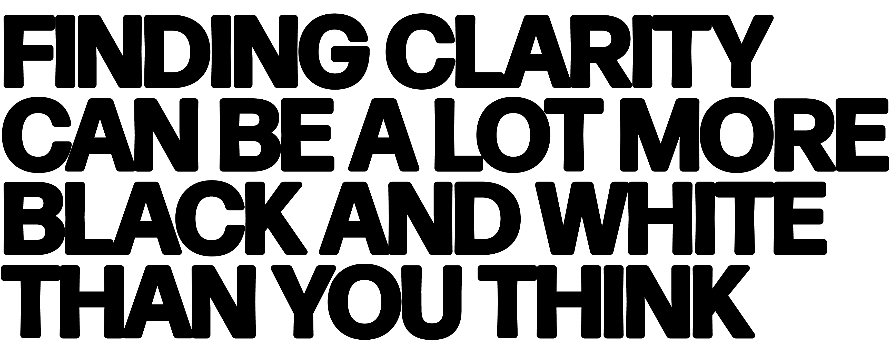

Listening to your body can be a useful way to recognise when a busy mind transitions into a stressed one. The
body often provides physical signals or symptoms when stress levels are elevated, such as muscle tension,
headaches, changes in appetite, difficulty sleeping, or increased heart rate.
By paying attention to these cues, individuals can become more aware of their stress levels and take proactive
steps, some as simple as just breathing, in order to manage them before they escalate further.